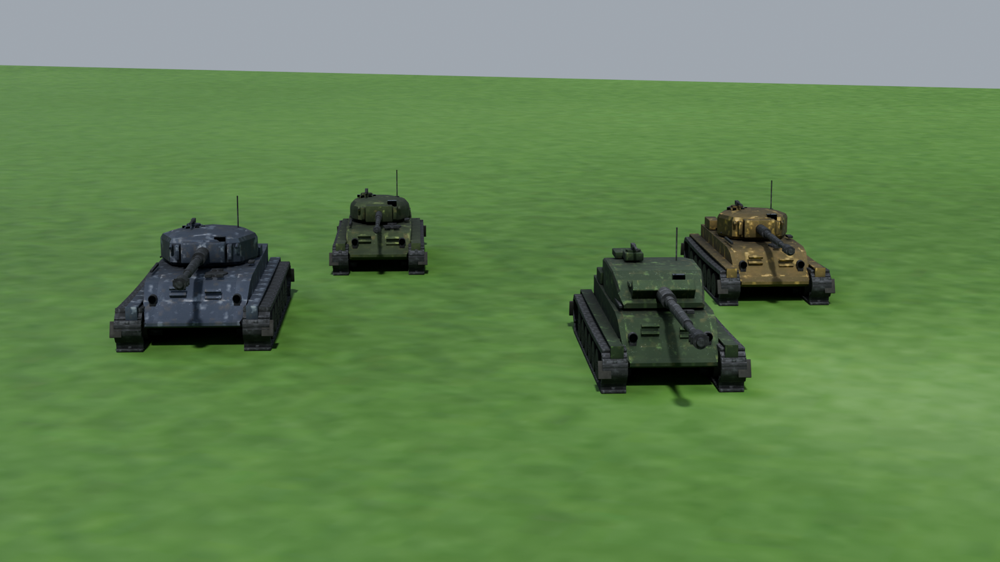
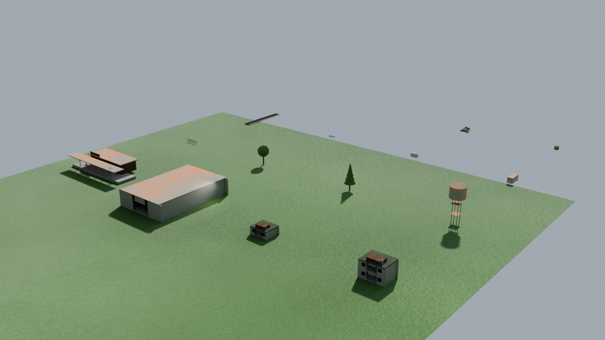
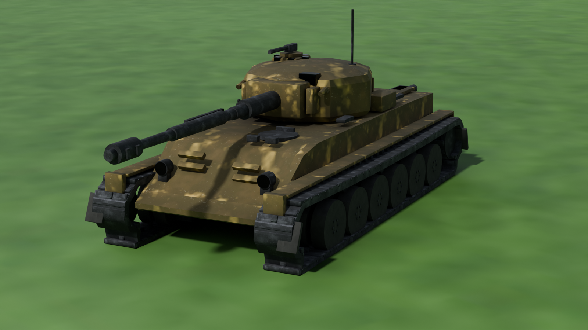

Управление: WASD — ход, мышь — прицел, ЛКМ — выстрел, ПКМ — зум ×8,
1/Q и 2/E — умения, H — ремонт напарнику, Tab — состояние боя, Esc — пауза.
Техника: четыре класса

ЛТ «Ветер», СТ «Варяг», ТТ «Гранит» (верхний ряд) и ПТ «Гроза» — рендер из Blender (Cycles): та же геометрия, что загружается в Unity.
Объекты карты

Дома с интерьерами, ангары, станция, водонапорная башня, деревья, контейнеры, заборы, рельсы, стога.
СТ «Варяг» крупным планом

Геометрия собрана скриптом: корпус — единая оболочка по сечениям, башня — тело вращения, лента траков идёт по траектории катков, катки с дисками и болтами, ствол с кожухом и дульным тормозом. UV-развёртка и сглаживание считаются автоматически.
Дальше по плану
Этап 1 (доводка): звук, анимация гусениц и отката, баланс по итогам 50 тестовых боёв
Этап 2: дороги и мосты, больше интерьеров, LOD и оптимизация до 100+ FPS
Этап 3: сборка Windows-версии, настройки, история боёв, медали
Этап 4: онлайн на 30 игроков (Netcode/Mirror), матчмейкинг, серверные боты
Подробности — в docs/ROADMAP.md, устройство кода — в docs/ARCHITECTURE.md, разбор ответов — в docs/ANSWERS.md.